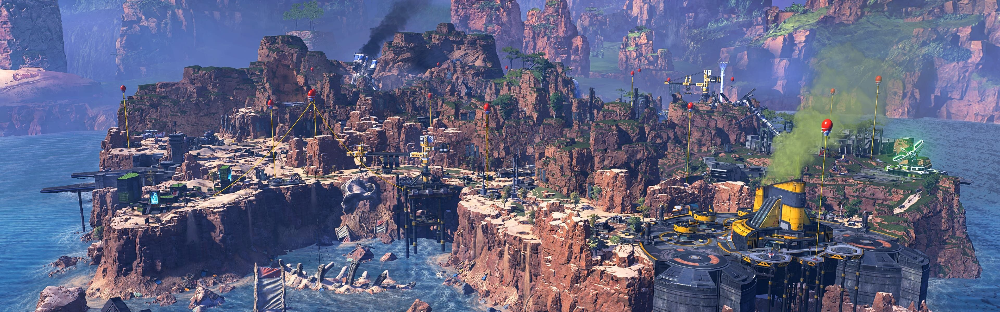
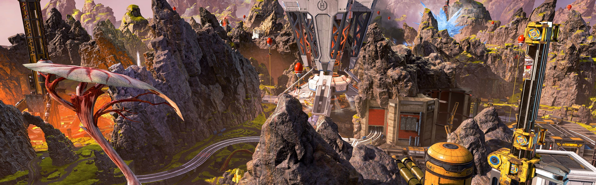
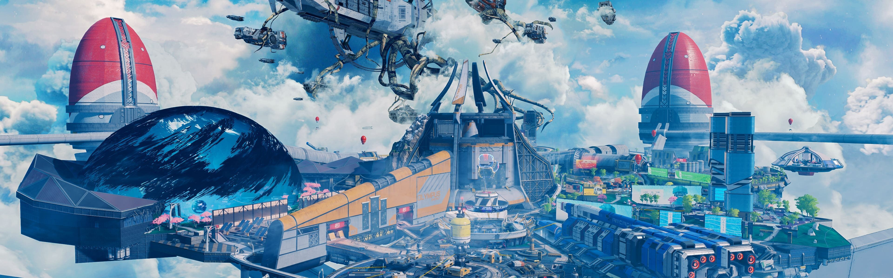

Mapas
Cañon de los Reyes
El lugar denominado "Cañón de Los Reyes" fue considerado un centro de investigación y desarrollo. del IMC, hasta que el Sindicato eligió este lugar para comenzar a realizar por primera vez los juegos de Apex, técnicamente hablando, esta fue la primera arena, donde comenzaron y siguen dando los Juegos de Apex
Fin del Mundo
Este fue considerado un lugar muy inestable y peligroso debido a la actividad volcánica presentado en este, sin embargo, la tierra contenía minerales altos y muy valiosos, y para poder extraerlos se construyeron torres de regulación térmica para contener esta actividad volcánica y hacer que el lugar fuera "habitable". Sin embargo, una falla en una de las torres generó una era "congelada", donde una pequeña población de personas construyó una civilización sin tecnología, hasta Bloodhount, una futura leyenda de Apex lo cambió todo. Algún tiempo después llegó Hammond Robotics y restauró el lugar, aprovechando también sus propios recursos, reconstruyendo así lo que sería el segundo escenario de los Juegos de Apex.
Olympus
Olympus era considerada la ciudad ideal para vivir, un hermoso lugar en las nubes, donde cientificos brillantes llevaban acabo grandes proyectos cientificos para las Tierras Salvajes. Sin embargo un experimento de fase salio mal, sacrificando a varios de estos cientificos brillantes, pero con la ayuda de Hammond Robotics y el Sindicato pudieron restablecer el lugar y convertirlo en una futura arena de Apex Legends.
